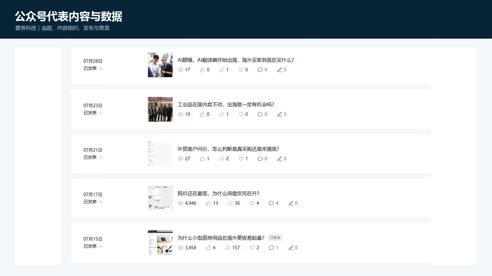
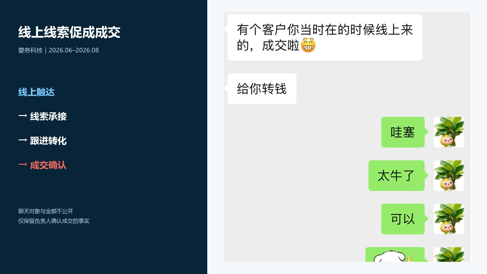
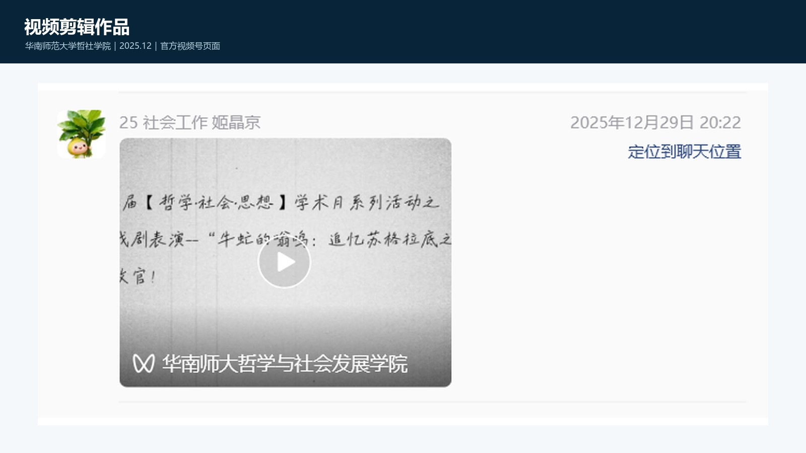

要务科技
AI外贸获客产品运营实习
用户场景内容获客产品演示线索转化
查看案例 ↓2027届硕士｜产品策划 · 产品运营 · 用户增长
做过AI产品0–1推广、B端内容获客、用户反馈整理与运营流程优化。
用真实项目展示我如何发现问题、推进执行并复盘结果。
方向定位
产品 × 运营PRODUCT & OPERATIONS个人求职作品集；项目数据按授权与脱敏口径展示。
EXPERIENCE MAP
两段互联网产品运营实习覆盖B端获客与教育产品冷启动，并通过校园项目持续训练内容表达和协作执行。
VERIFIED RESULTS
用真实项目说明我如何从用户触达走到注册、线索和反馈闭环；团队结果与个人动作分别标注。
日慈公益｜项目团队4个月结果
要务科技｜完整实习阶段
3,000元预算｜有效线索15+
要务科技｜进入业务跟进
公众号内容运营
要务科技ACQUISITION · CONVERSION · REVIEW
从企业客户痛点出发提炼产品卖点，负责选题、素材、产品演示与咨询承接；持续跟踪阅读、转发、线索质量和客户反馈。


BUSINESS LOOP
在初创项目整体成交频次较低、以渠道转介绍为主的背景下，通过线上引入的客户线索促成 1 单成交，并获得负责人确认。
公开页面不披露客户、负责人身份及金额，只展示成交事实。
公众号视觉排版
华师研究生会EDITORIAL LAYOUT
负责学院研究生会活动推文排版，处理信息层级、图片节奏与移动端阅读体验。两篇作品均由学院官方公众号发布并署名。
视频策划与剪辑
华师研究生会VIDEO EDITING
完成哲学戏剧活动回顾视频剪辑，组织画面顺序、节奏和字幕信息，并由华南师范大学哲学与社会发展学院官方视频号发布。

小红书 / KOL / UGC
日慈公益基金会0–1 GROWTH · COMMUNITY · FEEDBACK
参与AI心理助手小程序0–1运营增长，在教师社群中答疑、收集真实使用反馈，并将高频问题整理为产品建议和推广流程优化项。
社群运营、多渠道推广与教师用户沟通，支持产品进入目标学校场景。
项目4个月新增注册用户4,000+，覆盖全国1,000+所中小学校。
分类整理用户反馈，优化推广SOP与社群触达流程，支持产品体验改进。

用户反馈与流程优化
日慈公益基金会USER INSIGHT · SOP
参与“益师心友”AI 心理助手 0–1 推广，在教师社群答疑、收集问题并归类反馈，支持产品迭代和推广 SOP 优化。

GEO 内容策略
要务科技DATA-DRIVEN CONTENT
围绕用户搜索意图和竞品占位规划 GEO 主题，通过固定问题集观察品牌在 AI 回答中的出现率与推荐率变化。
同口径样本：12 个问题 × 4 个平台 = 48 个回答


ROLE FIT
我的优势不是局限在单一平台，而是能够理解用户、梳理问题、组织方案、推进执行，并用数据和反馈持续优化。
能够从用户访谈、产品演示和一线反馈中识别高频问题，整理为需求、内容方案及产品优化建议。
参与两款AI产品运营，覆盖目标用户分析、冷启动推广、社群承接、反馈收集与产品体验迭代。
拥有用户触达、注册增长、线索转化和SOP优化经验，关注完整漏斗而非单一曝光指标。
能够将复杂产品信息转化为公众号、视觉和视频内容，并结合传播与转化数据持续复盘。
READY TO CONTRIBUTE